We left for Pune airport around 9:00 pm. We booked a Joyride cab to the airport from home. The flight, ‘Go Air’ to Chennai, was on time and it left Pune at 11:15 pm. We reached Chennai at midnight on 19th Nov. We stayed in the airport until 4:00 am. After refreshing in the airport, we walked to Thirusulam station and took a suburban train to Chennai Egmore.
We booked a reservation on the train for Tiruchy from Chennai. The train was at 7:45 am. After taking breakfast at Anand Bhavan, we boarded the train and reached Tiruchy around 1:00 pm. We took a room at Tiruchy Railway Junction itself. Earlier, we had also stayed in this railway accommodation. The room was good. After leaving the luggage, we went to a nearby hotel and took lunch.
1. Vayalur Murugan Temple
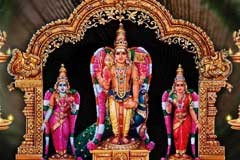
Buses are available from ‘Sathram Bus Stand’, close to the Main Guard Gate. It is about a 20-minute bus travel. Frequent buses are available.
2. Samayapuram Temple
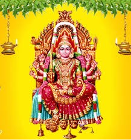
From Tiruchy Sathram bus stand, frequent buses are available. Bus travel is about 20 minutes.
3. Srirangam Temple
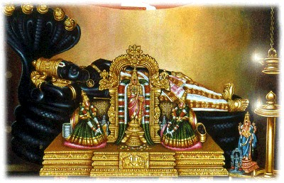
Frequent buses are available from Tiruchy Junction. These buses go via Sathram bus stand. Here, a crowd is always present. To have a quicker darshan, one can buy a ticket for ₹50 or ₹250. We can see Ranganathar here in the ‘Pallikonda pose’. Also, we can see in front of the ‘Moolavar’ the famous ‘Utsava Murthy’. This ‘murthy’ was saved from Mughal emperors when they invaded South India by brave Vaishnavas who took this deity into various forests of Kerala. This episode is described in detail in ‘Thiruvarangan Ulla’ by Shri Venugopal.
4. Thiruvanikoil Temple
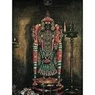
This temple is about 2 km away from Srirangam temple. This is a Siva temple. The name of the God is ‘Arulmigu Jambukeswarar’. Amman's name is Akilandeswari.
5. Rockfort Temple
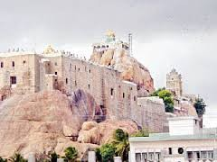
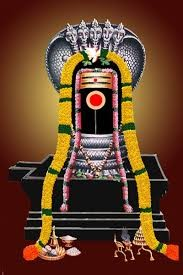
From Main Guard Gate, Rock Fort temple is within walking distance. Lord Ganapathy is located at the foot of the rock. Thayumanaswamy is located around 450 steps above the base. Uchi Pillayar is placed on the top of this rock.
6. Vaitheswaran Temple
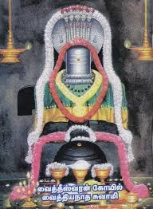
Early morning, we left Tiruchy and proceeded to Mayiladuthurai by train. We reached Mayiladuthurai around 7:00 am, put our baggage in the railway cloakroom, and went to Vaitheswaran Koil.
Moolavar Name: Vaithiyanathar. Amman Name: Thaiyal Nayaki.
According to mythology, Lord Siva, in the name of Vaithiyanathar, cured people who were suffering by performing surgery, and Goddess Parvathi, in the name of Thaiyal Nayaki, did the dressing and blessed them for quick healing.
7. Mathur Muthu Veeran Temple
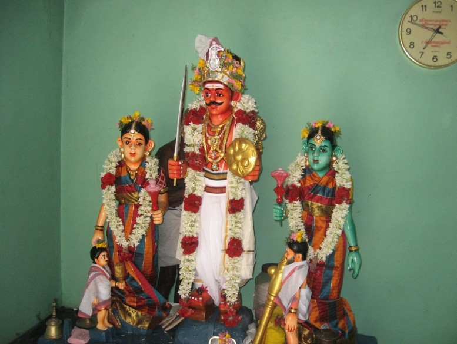
From there, we went to Mathur to visit our family God, Muthu Veeran. From Vaitheswaran Koil, we took a Sirkazhi bus and got down at Akkur, and from there we took an auto to Mathur. After completing the puja, we returned to Mayiladuthurai and took a train to Kumbakonam. The travel agency owner, Mr. Ramesh, arranged a cab and we reached the hotel. That night, we took complete rest.
8. Thirubhuvanam Temple
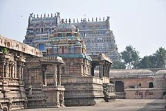
The cab came around 7:00 am. We were taken to Thirubhuvanam. This place is on the Mayiladuthurai–Kumbakonam road. The Moolavar's name is Dharmasamvardhani samedha Kambahareswarar. This is a Siva temple constructed by Chola King Kulothunga. It is a very big temple like the Thanjavur Brihadisvara Temple. Next, we went to Thiruvidaimarudur. This is a Siva temple. Here, Siva is worshipped in the name of Brahat Sundara Gujambigai samedha Mahalinga Perumal. A very huge Nandi in white color is the center of attraction in this temple.
9. Govindapuram Temple
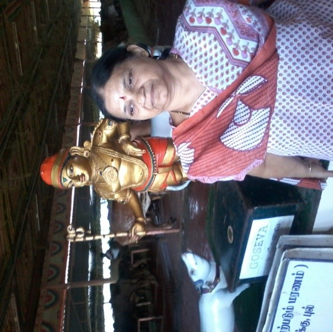
This is a new temple at Kumbakonam. Lord Rukmani and Vitthal are very beautifully decorated. Also, a big cattle farm is maintained here. In this farm, only German cows are brought up.
10. Suriyanar Koil
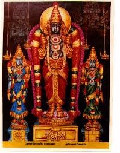
This temple is located in Aaduthurai, on the way from Mayiladuthurai to Kumbakonam. This is one of the Navagraha temples of Kumbakonam.
11. Sukra Sthalam (Kanjanur)
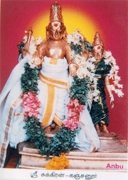
This is one of the Navagraha temples of Kumbakonam. This temple is located in Kanjanur, 18 km from Kumbakonam. This temple was built by a Chola king. This is a Siva temple. The main deity is Agneeswarar. Ambal's name is Karpagambal.
12. Masilamaniswara Temple, Thiruvaduthurai
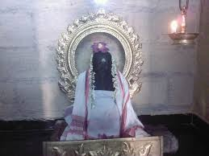
This is a Siva temple belonging to the 7th century. This temple is 24 km away from Kumbakonam. The main deity's name is Masilamaniswarar in the form of a Lingam. The huge Nandi is also beautiful.
13. Thirumananjeri Temple
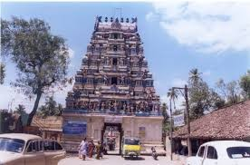
This is a famous temple in this region. It is believed that for unmarried boys and girls who visit this temple, the obstacles to their marriages vanish and they get married to the person of their choice. Hence, this temple is always crowded with youngsters. The main deity is Kalyanasundarar; Ambal is Kokilambal.
14. Swetharanyeswarar Temple (Thiruvenkadu) / Budhan Temple
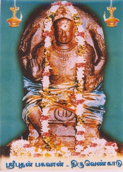
This temple is close to Sirkazhi. This is one of the Navagraha temples of Kumbakonam. The main deity's (Siva) name is Swetharanyeswarar. This deity is also called Aghoramurthy.
Poompuhar
This place is close to Thiruvenkadu. In front of the seashore, a museum depicting Silappathikaram is there. A few statues are also there. The place is beautiful but very poorly maintained. Perhaps this was created by the earlier Chief Minister and the present government is neglecting this monument.
15. Kethu Temple, Keezhperumpallam
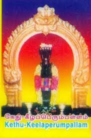
This temple is one among the nine Navagraha temples of Kumbakonam. This one is close to Poompuhar. From Kumbakonam, it is around 50 km away. Being the God of education, people visit this temple to seek His blessings for higher studies. This is a Siva temple and the main deity is Naganathar. Ambal's name is Soundaryanayaki.
16. Thirukkadaiyur
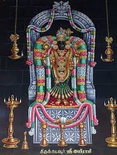
This is a Siva temple. This temple is connected with the episode of Siva saving Markandeya from death. People come here to seek the blessings of Lord Siva for a long life. The main deity's name is Amritaghateswarar and Ambal's name is Abirami. Also, elderly couples come here to celebrate Shashti Apthapoorthi.
17. Ananthamangalam Anjaneya Temple
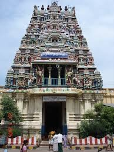
This place comes under the Nagapattinam district. The main deity is Vasudeva Perumal. Ambals are Sengamalavalli, Sridevi, and Bhoodevi. The Anjaneyar of this temple is very popular, and devotees are constantly visiting this temple to seek His blessings. Anjaneyar is named “Trinethra Dasaphuja Veera Anjaneyar.” This temple is about 1,000 years old.
18. Thirunallar Saniswaran Temple
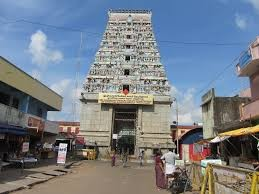
Thirunallar is in Karaikal, in the state of Puducherry. The main deity, Siva, is named Dharbaranyeswarar. This is one among the Navagraha temples for the deity Sani of Kumbakonam. This temple is invariably crowded. As it is in another state, a taxi entry fee of ₹200 is collected.
19. Thirunarayur Nambi Temple, Nachiyar Koil
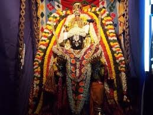
This temple is for Lord Vishnu. This temple was constructed by a Chola king during the 3rd century. This temple is glorified in Divya Prabandham. Kal Garudar is the prominent feature of this temple.
20. Thirucherai Saranathan Temple
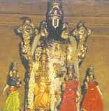
Thirucherai village is near Kudavasal, Thanjavur District, fourteen km from Kumbakonam. This temple is one among the 108 Divya Desams. The main deity of the temple is Saranathan Perumal; Ambal is Saranayaki.
21. Saraparameswarar Temple, Thirucherai
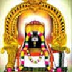
This is a Siva temple, constructed by Kulothunga Chola. The main deity is Saraparameswarar and Ambal is Gnanambikai (Gnanavalli).
22. Vaanchinathar Temple, Thiruvanchiyam
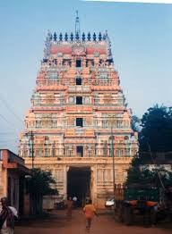
This is a very big Siva temple, situated 35 km away from Kumbakonam. It is on the Nannilam bus route. This temple is considered most important, even compared to the Kasi temple. The main deity's name is Vaanchinathar and Ambal's name is Mangalanayaki.
23. Thiru Veezhinathar Koil, Thiruveezhimizhalai
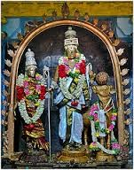
This is a Siva temple situated in Thiruvarur district. The main deity is Thiru Veezhinathar and the Ambal's name is Azhagiya Maamulayammai.
24. Adhi Vinayakar Temple, Thilatharpanapuri
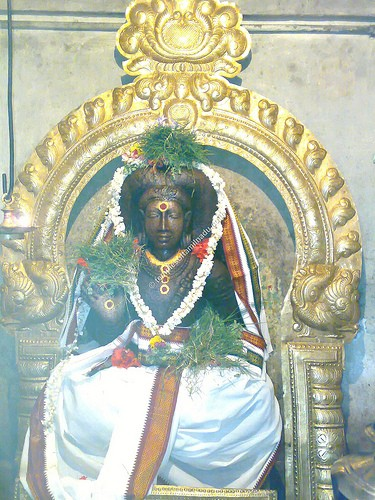
This temple is around 3 km from Koothanur. Lord Ganesh is seen in this temple with a normal face and without a trunk. The main deity in this temple is Swarnavalli sametha Muktheeswarar. This place is considered one of the seven places (Kasi, Rameswaram, Srivanchiyam, Thiruvenkadu, Gaya, Thiruveni Sangamam, and Thilatharpanapuri) where rituals can be performed to remove ‘Pithru Dosham’. Here, all days are considered ‘Amavasai’ and ‘tharpanam’ can be done. Even ladies perform sangalpam for their deceased close relatives. Pandits are available to conduct such rituals.
25. Koothanur Saraswathi Temple
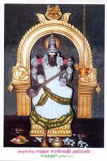
This temple is situated in Thiruvarur district. Koothanur is 25 km from Thiruvarur. Koothanur is the birthplace of the poet Ottakoothar. This village was presented to him by a Chola king. There are only a very few temples dedicated to the Goddess Saraswathi, the goddess of wisdom. During Vijayadasami, special pujas are performed here.
26. Shree Lalithambigai Temple, Thirumeeyachur
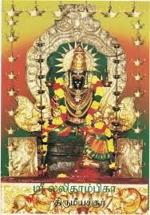
This temple is close to Peralam village. The presiding deity is Lord Meganatha. The Shree Lalithambigai deity is very famous, and people come here to seek her blessings. In this temple, in praise of Shree Lalithambigai, Sage Agastya sang the famous Lalitha Navaratna Mala. It is believed that reciting Lalitha Sahasranama in front of this Devi brings peace and harmony. People say that during the month of Chithirai, from the 21st to the 27th, sun rays fall over the main deity (the sun shows respect).
27. Paampuranathar Temple, Thirupampuram
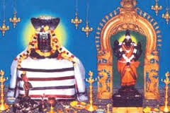
This temple is 26 km away from Kumbakonam. This is a Siva temple. The main deity's name is Paampuranathar and the Ambal's name is Vandaar Poonkuzhali. According to legend, the God of Serpents, Nagarajan, worshipped Siva in this place. People say that even today, many snakes are found in this village, yet people do not die from snake bites. People come here to perform puja to remove ‘Nagadosha’, similar to Kalahasthi.
28. Sri Maha Prathyangira Devi Temple, Ayyavadi
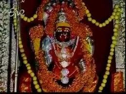
This temple is about 6 km away from Kumbakonam. This place is connected with the Mahabharata. It is believed that the Pandavas stayed here, and the name of this place was Ayyavar Padi, which subsequently changed to Ayyavadi. It is believed that Lord Siva took the Sarabeswara avatar (lion's face and eagle's wings) to pacify Lord Vishnu, who had taken the Narasimha avatar to kill the demon king Hiranyakasipu. At that time, Devi Parvathi (Shakti), in the name of Maha Prathyangira, accompanied Siva. In this temple, another specialty is that the inner roof of the sannidhi is decorated entirely with ‘rudraksha’. Here, they do not perform ‘karpoora’ aarthi. Also, every ‘Amavasai’, they perform an ‘agni’ homam and offer kilograms of red chilies to the goddess. Former Chief Minister J. Jayalalithaa visited this temple before the election, offered red chilies, and achieved a massive victory.
29. Uppiliappan Temple
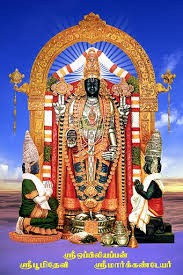
This temple is in Thirunageswaram. It is glorified in the Divya Prabandham. This is a Vishnu temple. The main deity's name is Uppiliappan. Ambal Lakshmi is here in the name of Bhumi Devi. All food items offered to God here are prepared without salt. Rama Navami is celebrated in this temple on a grand scale.
30. Rahu Sthalam, Thirunageswaram
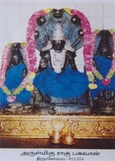
This temple is in Thirunageswaram, 8 km away from Kumbakonam. This is a Siva temple. The main deity is Siva in the name of Naganathaswamy and Ambal's name is Giri Gujambigai. A separate sannidhi exists for Lord Rahu. Milk abhishekam is performed for Lord Rahu daily during Rahukaalam. This is one of the Navagraha temples of Kumbakonam.
31. Patteeswaram Temple
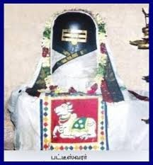
This temple is 8 km from Kumbakonam. This is a Siva temple. The moolavar's name is Patteeswarar and the Thayar Durga's name is Palvalai Nayaki. Here, Durga appears in a ‘shanti’ swaroopam. This temple was created during Chola times.
32. Kalyanasundareswarar Temple, Thirunallur
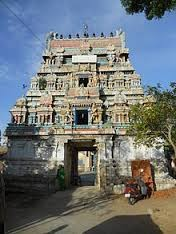
This is a Siva temple in Thirunallur, 13 km away from Kumbakonam. This temple was built in the 6th century during Chola rule. The Lingam is swayambhu. It is a unique lingam and its color changes five times a day. Lord Siva is named Kalyanasundareswarar, also called Panchavarneswarar. Ambal's name is Kalyanasundari.
33. Palaivananathar Temple, Thiruppalaithurai
This is a Siva temple. This place is 15 km from Kumbakonam. This temple was constructed by the Cholas. It is believed that Lord Ram performed puja in this place before going to Lanka to fight Ravana. Adjacent to the temple, a huge granary is seen. This was built by Kulothunga Chola and 3,000 kalams of paddy can be stored in it. The granary is intact even today.
34. Sree Garbarakshambigai sametha Mullaivananathar temple, Thirukarugavur
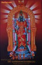
This temple is in Thirukarugavur and 22 km away from Kumbakonam. This is a Siva temple. The moolavar's name is Mullaivananathar and Ambal is Garbarakshambigai. It is believed that the Ambal of this temple cures all infertility issues. So couples who do not have children seek this goddess's blessings. Special pujas are also arranged in this temple for those couples.
35. Ramalingaswamy Temple, Papanasam
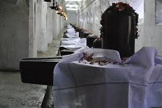
This temple is about 15 km from Kumbakonam. This temple is also called 108 Sivalayam. It is believed that Lord Ram came to this place and performed puja for Siva. The moolavar's name is Ramalingaswamy and the Amman's name is Parvadhavardhani. In the Praharam, 108 siva lingams are present. The name of this place itself is ‘Papanasam’. People seek the blessings of Lord Siva here to forgive the sins committed.
36. Chandran Temple, Thingalur
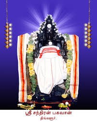
This temple is about 30 km away from Kumbakonam. This is a Siva temple and the main deity Siva is named Kailasanathar and Ambal's name is Periyanayaki Amman. It is believed that those who suffer from mental retardation and nerve problems pray here for their ailments to be cured.
37. Sri Panchanadhishar Temple, Thiruvaiyaru
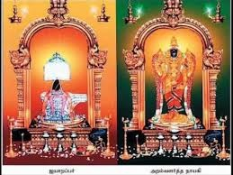
This temple is located some 15 km away from Thanjavur. The main deity is Panchanadhishar and Ambal's name is Dharmasamvardhani.
38. Guru Temple, Alangudi
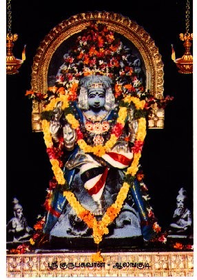
The main deity is Abathsahayeswarar and the Amman's name is Elavarkuzhali. It is believed that in this place only Lord Siva consumed the deadly poison emitted during the churning of Parkadal. In a separate sannidhi, the Guru Bhavan deity is located. This temple is one among the Navagraha temples of Kumbakonam.
39. Vellai Pillayar, Thiruvalanchuzi
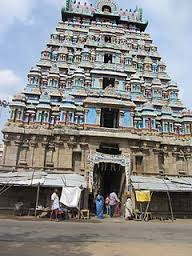
This temple is close to Swamimalai, Kumbakonam. Vellai Pillayar is famous, also called Norai Pillayar (made out of the froth of the sea). Since the Pillayar is delicate, abhishekam is not performed. This place is 6 km away from Kumbakonam. This is a Siva temple. The main deity Siva is named Kabatheeswarar and Amman is named Periya Nayagi.
40. Swamimalai Temple, Kumbakonam
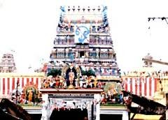
This place is 8 km away from Kumbakonam. The main deity is Karthikeyan in the name of Swaminathan. This temple is the 4th among the ‘Aaru Padai Veedugal’ of Karthikeyan. A golden chariot is also present in this temple; 7 kg of gold, silver, and other metals were used to fabricate it. Every month on ‘Kirtikai’, special pujas are conducted.
41. Darasuram Temple
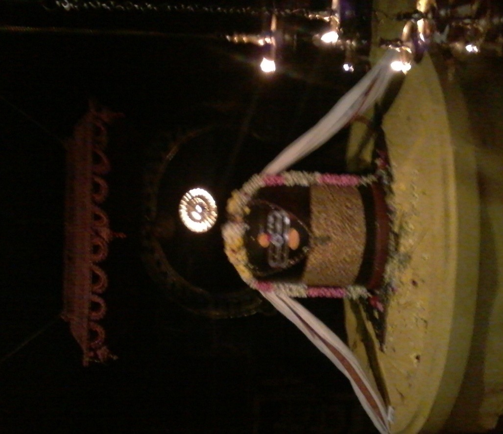
This temple is 3 km away from Kumbakonam main bus stand. This is one among the most beautiful temples created by the Cholas. It was built by Rajaraja Chola during the 12th century. This is a Siva temple, a huge structure full of architectural beauty. It has been recognized by UNESCO as a World Heritage Monument. According to mythology, ‘Airavathy’, Lord Indra’s horse, lost its shiny white color due to a curse. To regain its original beauty, ‘Airavathy’ prayed to Lord Siva in this place and obtained it back. So the main deity is called Airavateswarar here. A separate amman temple is also there; Amman's name is Deivanayaki.
Kumbakonam is called a temple town. There are 188 temples within the municipal limits of Kumbakonam. Also, this place was described as the Cambridge of South India during British times. Many schools and colleges were there at that time. Sankara Madam gave special preference to this place, and Veda Padasala was also there. There are 11 famous temples in Kumbakonam, all within a 5 km radius of the main bus stand. The cab we arranged came around 7:00 am and by 1:00 pm we returned to the hotel after visiting all eleven temples. Almost all temples remain closed from 12:30 pm to 4:40 pm.
42. Adi Kumbeswarar Temple, Kumbakonam
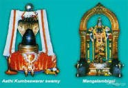
This is a Siva temple, very big, constructed during the 7th century by the Chola dynasty. Lord Siva appears as Adi Kumbeswarar and Parvathi Devi as Mangalambigai. This temple is one of the ‘Paadal Petra Sthalam’.
43. Sri Chakrapani Temple, Kumbakonam
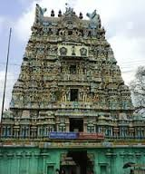
This is a Vishnu temple, 2 km from Kumbakonam railway station. Here Vishnu in the name of Chakrapani appears with the ‘chakra’. Though it is a Vishnu temple, archana is done with ‘vilvam’. Also, Panchamukha Hanuman of this temple is popular among devotees.
44. Ramaswamy Temple, Kumbakonam
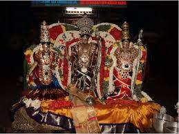
This temple was built by a Nayakar king for Lord Rama. The specialty is that the whole Ramayana is depicted in pictorial form on the walls of the prakaram.
45. Brahma Temple, Kumbakonam
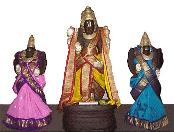
This is the only Brahma temple within the municipal limits of Kumbakonam. The main deity is Vedanarayana Perumal, appearing with Saraswathi Devi and Gayathri Devi. This temple was constructed in the 7th century during the Chola dynasty. Also, Mahamaham Kulam, where the Kumbh Mela is celebrated once every 12 years, is close to this temple.
46. Sri Somasundari Someswarar Temple, Kumbakonam
This temple is close to Adi Kumbeswarar temple. This is a Siva temple. The main deity is Someshwarar and the Ambal is Somasundari.
47. Sarangapani Temple, Kumbakonam
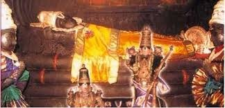
This is a Vishnu temple, one among the 108 temples of Vishnu revered in Nalaira Divya Prabandham written by twelve saint poets (Alwars). The main deity is Sarangapani and the Ambal is Komalavalli. The moolavar is in the ‘Sayanam’ pose like in Srirangam. The gopuram is attractive and very tall (173 ft).
48. Nageswaran Temple, Kumbakonam
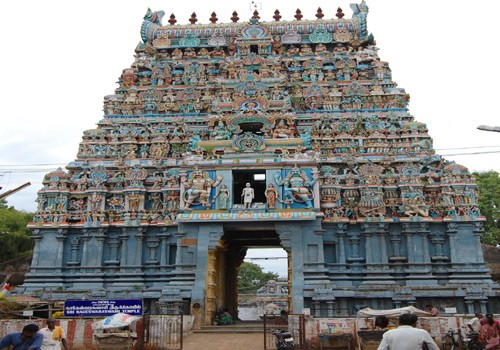
Also called Koothandevar Koil. This is a Siva temple constructed by Aditya Chola during the 9th century. The main deity is Sri Nageswarar Swamy and the Ambal is Periyanayagi Amman. This temple is classified as a Paadal Petra Sthalam.
49. Kasi Viswanathar Temple, Kumbakonam
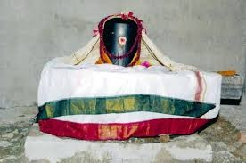
Classified as a Paadal Petra Sthalam and glorified in ‘Thevaram’ by Thirugnanasambanthar and Thirunavukkarasar (7th century). The main deity is Kasi Viswanathar and the Amman is Kasi Visalakshi. Goddesses of nine rivers (Ganga, Yamuna, Narmada, Saraswati, Cauvery, Godavari, Krishna, Tungabhadra, and Sarayu) are seen here.
50. Arulmigu Veerabhadra Swamy Temple, Kumbakonam
This temple is located inside the Kasi Viswanathar Temple. The main deity is Veerabhadra Swamy and the Ambal is Bhadrakali.
51. Banapureeswarar Temple, Kumbakonam
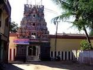
This is a Siva temple. It is believed that Lord Siva, from this place, aimed at the Purnakumbam (Amritham in a pot) during ‘pralayam’ and broke the pot. The ‘amritham’ scattered and fell over the Mahamaham pond. Hence, here he is named Banapureeswarar and the Ambal's name is Somakambika.
This temple is like a ration shop! Invariably it remains closed. Around 11:00 am we found the temple was closed. Evening around 6:30 pm we also found the closed door. We took the pain of locating the ‘Kurukkal’s home and requested him to open. Of course, he obliged and we had the darshan.